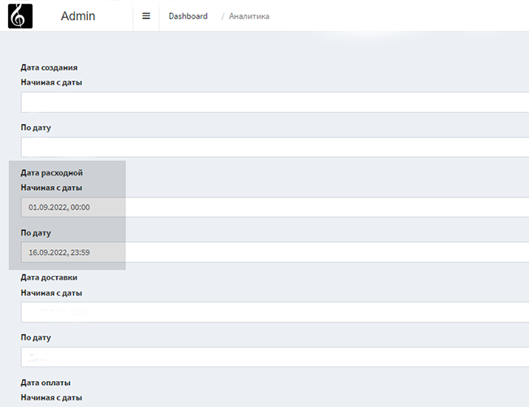
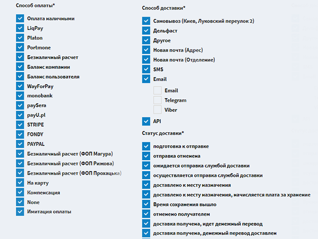
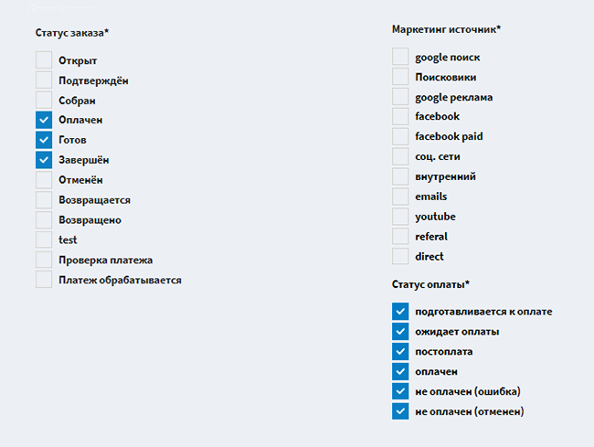
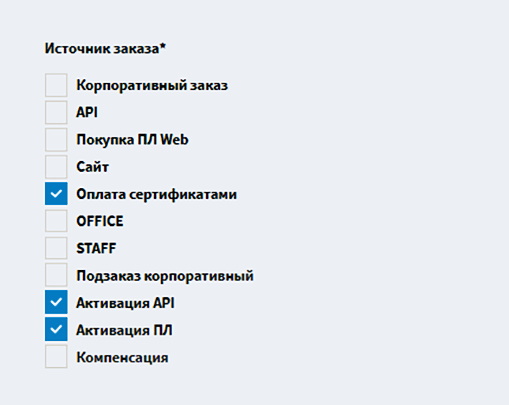
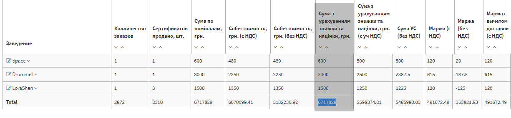
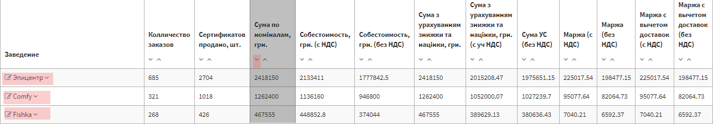
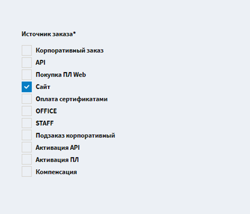
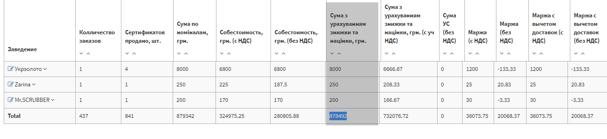
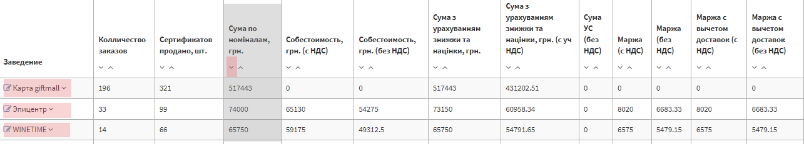

Відкриваємо в адмінці вкладку "аналітика" та встановлюємо дату і час (дивись зображення):
Всі наступні вкладки залишаємо по замовчуванню, як на фото:
 фільтри для активацій
Виставляємо фільтри для розрахунку активації в розділі "источник заказа"та натискаємо кнопку "відобразити"
- оплата сертифікатами
- активація АРІ
- активація ПЛ
Виручка, яка нас цікавить, знаходиться в стовпчику "сума з урахуванням знижки та націнки, грн"
розрахунок маржі активацій
Маржу без НДС потрібно поділити на суму УС без НДС,після чого, число, яке ми отримали помножити на 100
(Маржа без НДС / Сума УС без НДС)* 100
Щоб визначити топ-з по активаціям, потрібно піднятись вгору та на стовпчику "сума по номіналам" натиснути стрілочку вниз
фільтри для b2c
Виставляємо фільтри для розрахунку B2C в розділі "источник заказа"та натискаємо кнопку "відобразити":
- сайт
Виручка, яка нас цікавить, знаходиться в стовпчику "сума з урахуванням знижки та націнки, грн":
розрахунок маржі b2c
Від суми з урахуванням знижки та націнки з ур. НДС, відняти суму з урахуванням знижки і націнки на УС.
Маржу без НДС потрібно поділити на отриману суму, та помножити на сто.
Маржа без НДС / (Сума з урахуванням знижки та націнки з ур. НДС - Сумма з урахуванням знижки і націнки на УС) * 100
Щоб визначити топ-з по активаціям, потрібно піднятись вгору та на стовпчику "сума по номіналам" натиснути стрілочку вниз:
